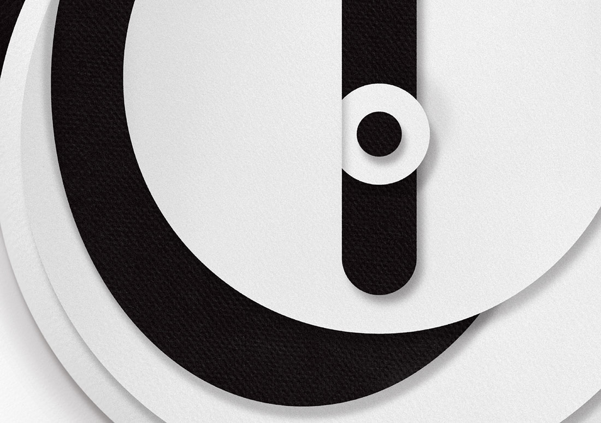
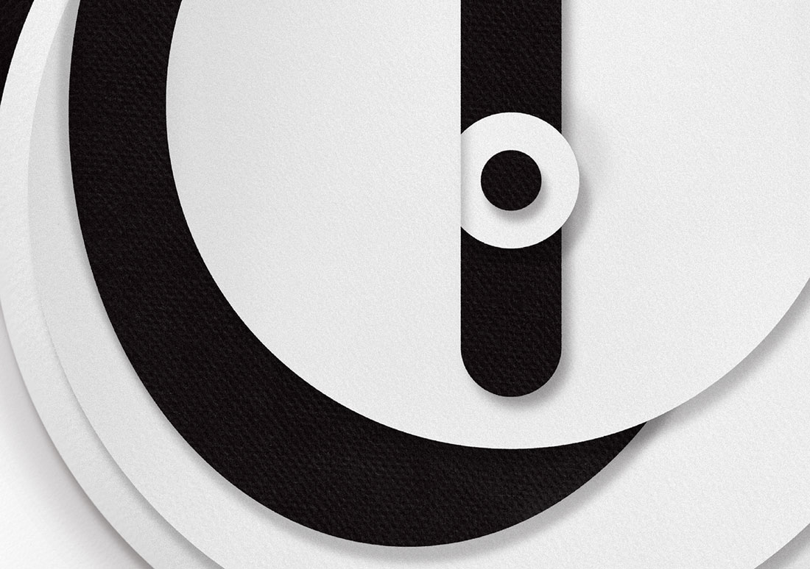

Poster for Oded Ezer's talk, part of the RISD Graphic Design Lecture Series 2013-14. The informational typography is constant on the center axis, obscured by a letterform inspired by Ezer's work. An almost purely illustrative companion poster hung at the venue on the evening of the lecture.
Honored by
Core77 Design Awards, Visual Communication Student Notable, 2014
Shown at
Final draft, RISD Graphic Design Senior Show, Woods-Gerry Gallery, 2015
 
